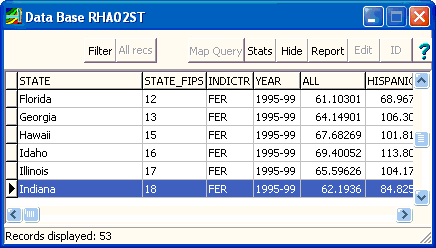

Example Linking (Joining) Data Bases
Many statistical data bases are not GIS but simply flat tables with data for
states or counties or other geographic regions. However, many of these have the State or County
FIPS
code, and can be linked to GIS shapefiles of state and
county boundaries. The link or join uses two fields which have the
same values for the corresponding records. The field names do not have to
be the same, and the order of the records does not matter. The program
must just be able to find the corresponding record in the second database, using
the value from the join field in the first database.
Other data bases will be records of individual events, like hurricanes or
tornadoes, and include a FIPS code for each event.
You can use the Sum, All records matching single field
on the
Stats button on the table
display window to create a file that can be linked with the total
number of events for each FIPS code, as well as the sum of fields like
FATALITIES or DAMAGE.
The database you are linking to your main data base can have at most 1 record
that matches each record in your primary database. If there are none, or
more than one, the join will not be accomplished. Several records in your
primary record can link to the same record in the other database--for instance a
database of counties in the US could have multiple records for each county
(perhaps for islands), but they would all link to the same county statistical
data.
In addition to using the fields through the link/joined data bases, you can
copy fields into the primary database with the Edit,
"Fill fields from linked database" option on the
table
display window.
We will demonstrate this capability with a database of live births from
1995-1999, downloaded from the US
National Atlas
 |
Select the linked data base with live births. You will not get this
display after linking, but could get it by opening the second database by
itself, and might want to check this database before attempting the join. Note about this linked data base:
- This is not a GIS data base because there is
- No button on the far left
indicating the point, line, or area nature of the data base, and
allowing you to change the display symbology.
- No "PLOT" button,
because without the GIS location data, you cannot plot this on the map.
- The presence of a "STATE_FIPS" field.
Select Fields to use for the linking. You should use "STATE_FIPS",
since as a number there are fewer chances that the spelling might be
different. You could alternatively try the "STATE" field.
You must select the field in both data bases, and while the two field names
might be diffeent, they must use the same coding within the field--you
cannot join based on full state names, as here, and two letter
abbreviations. |
 |
On the "PLOT" button of the state
data base, pick the "Color code by DB field"
option.
This is teen birth rate by state. The highest values in red, across
the southern part of the country, are twice (almost three times) those in New England, MN, and
ND. |
Setting up a Join in MICRODEM.
Last revision 12/19/2016